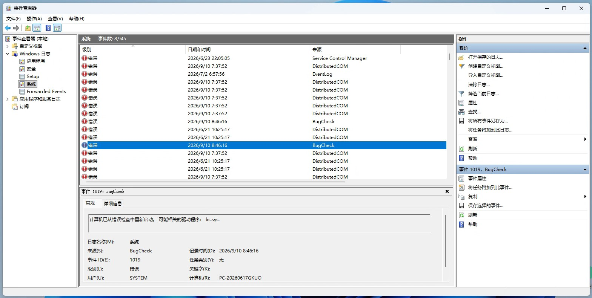
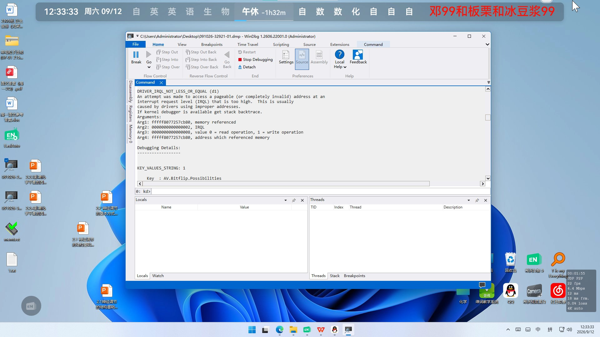

今天又是被语数英物化生轮奸的一天（全是主课）英语课上到一半，电脑突然BSOD，随后自动重启。我没看清具体错误信息，只记得几个关键词：driver、ks.sys。
下课后，我立即打开eventvwr——确有此事，ID为1019，是这个系统文件让系统进入错误检查。

我认为这只是系统暂时抽风，毕竟Bug11并非浪得虚名，但上到第二节课，这个症状复发了。
为了避免影响后续教学，我必须在老师找人之前尽快修好电脑。其实一上午过去电脑总共炸了5次，那发作前有什么征兆呢？
根据前面的信息，ks.sys可能与驱动有关，而出事的时候正好是数学课和英语课，老师也正好在这个时候使用展台！但奇怪的是，并非一启动展台电脑就崩溃，而是使用到一阵子突然就黑屏。
让我们先把转储弄出来进行分析。关于WinDbg的使用我之前讲过了，这里不多赘述，不过有些信息非常值得注意：

出事的时候IRQL很高，Arg2: 0000000000000002，这个数字意味着设备有多“紧急”，不过摄像头传画面确实会升高IRQL来处理硬件中断，问题就在于根据Windows的规定，IRQL到2的时候不能触发分页（也就是CPU要执行某个代码，但是发现内存里没有，必须要去硬盘里找）否则触发BSOD。
我是怎么知道的嘞？看这里：An attempt was made to access a pageable (or completely invalid) address at an interrupt request level (IRQL) that is too high.系统已经告诉我了，而usbvideo.sys、ksthunk!CVideoCaptureThunkHandler::Release之类的词出现，再结合事发时间，基本上就锁定问题所在了。
解决方案也极为简单——不用展台就行了，但这显然不可能。我怀疑是ks.sys本身损坏，sfc /scannow后查看日志却没有找到问题。我回忆起昨天晚上刚安装KB5124008更新，是不是它引起的？
但我向隔壁班电教求证——他们也收到这个更新并安装，而展台正常工作。我不信邪，让班上一个同学帮我把更新卸掉，重启后展台工作一切正常。
我认为这很诡异：查阅微软官方文档，并没有证据表明此次更新会影响UVC设备的工作，其他班级也安装这个更新，电脑正常运转。可为什么我们在安装这个更新后无论多少次重启和检查，BSOD总能被触发，反倒是卸载更新后电脑恢复正常呢？
因此，将这件事归咎于一个更新包属实不负责任，因此在标题中，我用了“疑似”一词，我也希望有小伙伴能为我解答一下。
（2026/9/13补）原来我不是个例，大家自己去看吧